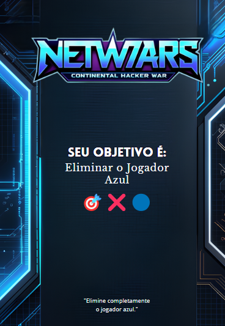
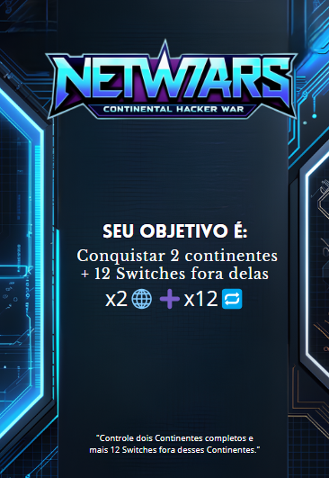
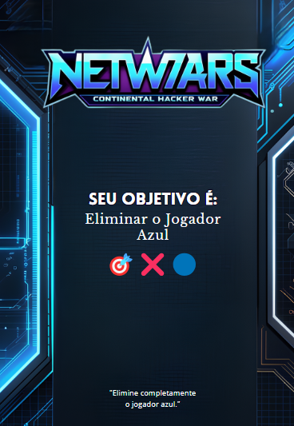
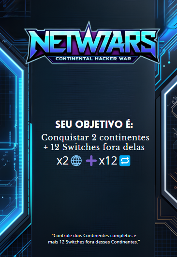

Manual de Regras – Netwars
1. Objetivo do Jogo
O principal objetivo do NetWars é que cada jogador cumpra uma missão específica ao controlar determinados switches dentro de uma rede. O jogo é competitivo, e vence aquele que conseguir completar sua missão primeiro. Para isso, será necessário usar estratégia, responder corretamente às perguntas propostas e saber administrar seus recursos de forma inteligente.
2. Preparação Inicial
2.1. Antes de iniciar a
partida
Cada jogador deve escolher uma cor que o representará ao longo do jogo.
Em seguida, os pacotes iniciais são distribuídos proporcionalmente à quantidade de
participantes,
garantindo equilíbrio entre todos os jogadores.
Os switches/territórios disponíveis no tabuleiro são distribuídos de forma alternada, recebendo
inicialmente um pacote cada. Após essa distribuição inicial, os pacotes restantes são alocados
livremente pelos jogadores em switches que já controlam, de acordo com suas estratégias.
2.2. Distribuição de Cartas:
As cartas de território (Territory Card) são embaralhadas e distribuídas igualmente entre os
jogadores. Elas definem quais switches iniciais pertencem a cada um, garantindo que todos
comecem
com uma base de operação clara.
As cartas de objetivo (Object Card) também são embaralhadas. Cada jogador recebe uma carta de missão secreta, que define seu objetivo para vencer a partida. Essa carta não pode ser revelada aos demais, a menos que seja cumprida com sucesso.
 


